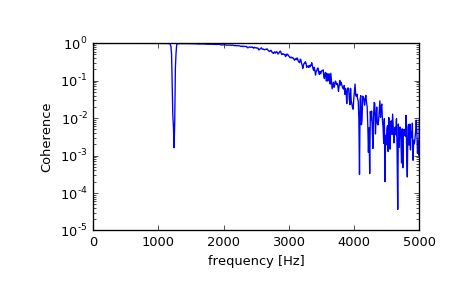

scipy.signal.coherence¶
-
scipy.signal.coherence(x, y, fs=1.0, window='hann', nperseg=None, noverlap=None, nfft=None, detrend='constant', axis=-1)[source]¶ Estimate the magnitude squared coherence estimate, Cxy, of discrete-time signals X and Y using Welch’s method.
Cxy = abs(Pxy)**2/(Pxx*Pyy), where Pxx and Pyy are power spectral density estimates of X and Y, and Pxy is the cross spectral density estimate of X and Y.Parameters: x : array_like
Time series of measurement values
y : array_like
Time series of measurement values
fs : float, optional
Sampling frequency of the x and y time series. Defaults to 1.0.
window : str or tuple or array_like, optional
Desired window to use. See
get_windowfor a list of windows and required parameters. If window is array_like it will be used directly as the window and its length must be nperseg. Defaults to a Hann window.nperseg : int, optional
Length of each segment. Defaults to None, but if window is str or tuple, is set to 256, and if window is array_like, is set to the length of the window.
noverlap: int, optional
Number of points to overlap between segments. If None,
noverlap = nperseg // 2. Defaults to None.nfft : int, optional
Length of the FFT used, if a zero padded FFT is desired. If None, the FFT length is nperseg. Defaults to None.
detrend : str or function or False, optional
axis : int, optional
Axis along which the coherence is computed for both inputs; the default is over the last axis (i.e.
axis=-1).Returns: f : ndarray
Array of sample frequencies.
Cxy : ndarray
Magnitude squared coherence of x and y.
See also
periodogram- Simple, optionally modified periodogram
lombscargle- Lomb-Scargle periodogram for unevenly sampled data
welch- Power spectral density by Welch’s method.
csd- Cross spectral density by Welch’s method.
Notes
An appropriate amount of overlap will depend on the choice of window and on your requirements. For the default ‘hann’ window an overlap of 50% is a reasonable trade off between accurately estimating the signal power, while not over counting any of the data. Narrower windows may require a larger overlap.
New in version 0.16.0.
References
[R208] P. Welch, “The use of the fast Fourier transform for the estimation of power spectra: A method based on time averaging over short, modified periodograms”, IEEE Trans. Audio Electroacoust. vol. 15, pp. 70-73, 1967. [R209] Stoica, Petre, and Randolph Moses, “Spectral Analysis of Signals” Prentice Hall, 2005 Examples
>>> from scipy import signal >>> import matplotlib.pyplot as plt
Generate two test signals with some common features.
>>> fs = 10e3 >>> N = 1e5 >>> amp = 20 >>> freq = 1234.0 >>> noise_power = 0.001 * fs / 2 >>> time = np.arange(N) / fs >>> b, a = signal.butter(2, 0.25, 'low') >>> x = np.random.normal(scale=np.sqrt(noise_power), size=time.shape) >>> y = signal.lfilter(b, a, x) >>> x += amp*np.sin(2*np.pi*freq*time) >>> y += np.random.normal(scale=0.1*np.sqrt(noise_power), size=time.shape)
Compute and plot the coherence.
>>> f, Cxy = signal.coherence(x, y, fs, nperseg=1024) >>> plt.semilogy(f, Cxy) >>> plt.xlabel('frequency [Hz]') >>> plt.ylabel('Coherence') >>> plt.show()
